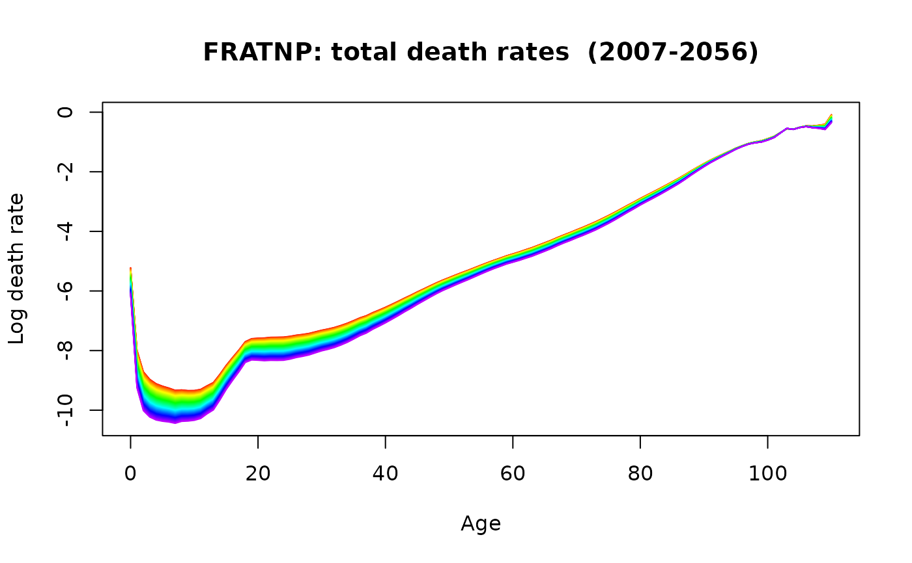

The coefficients from the fitted object are forecast using a univariate time series model. The forecast coefficients are then multiplied by the basis functions to obtain a forecast demographic rate curve.
# S3 method for fdm
forecast(
object,
h = 50,
level = 80,
jumpchoice = c("fit", "actual"),
method = "arima",
warnings = FALSE,
...
)Output from fdm.
Forecast horizon.
Confidence level for prediction intervals.
If "actual", the forecasts are bias-adjusted by the difference between the fit and the last year of observed data. Otherwise, no adjustment is used.
Forecasting method to be used.
If TRUE, warnings arising from the forecast models for
coefficients will be shown. Most of these can be ignored, so the default is
warnings=FALSE.
Other arguments as for forecast.ftsm.
Object of class fmforecast with the following components:
Name of region from which the data are taken.
Ages
from lcaout object.
Years from lcaout object.
List of matrices containing forecasts, lower bound and upper bound of prediction intervals. Point forecast matrix takes the same name as the series that has been forecast.
Matrix of one-step errors for historical data
Matrix of one-step forecasts for historical data
List of objects of type forecast
containing the coefficients and their forecasts.
One-step errors for each of the coefficients.
List containing the various components of variance: model, error, mean, total and coeff.
Fitted model in obj.
Type of data: “mortality”, “fertility” or “migration”.
france.fit <- fdm(fr.mort,order=2)
france.fcast <- forecast(france.fit,50)
plot(france.fcast)

models(france.fcast)
#>
#> -- Coefficient 1 --
#> Series: xx[, i]
#> ARIMA(1,1,1) with drift
#>
#> Coefficients:
#> ar1 ma1 drift
#> 0.6383 -0.8145 -0.1265
#> s.e. 0.1481 0.1120 0.0411
#>
#> sigma^2 = 1.206: log likelihood = -285.97
#> AIC=579.95 AICc=580.16 BIC=592.93
#>
#> -- Coefficient 2 --
#> Series: xx[, i]
#> ARIMA(2,1,1)
#>
#> Coefficients:
#> ar1 ar2 ma1
#> 0.3818 0.2926 -0.9679
#> s.e. 0.0758 0.0745 0.0280
#>
#> sigma^2 = 0.9067: log likelihood = -259.4
#> AIC=526.79 AICc=527.01 BIC=539.78